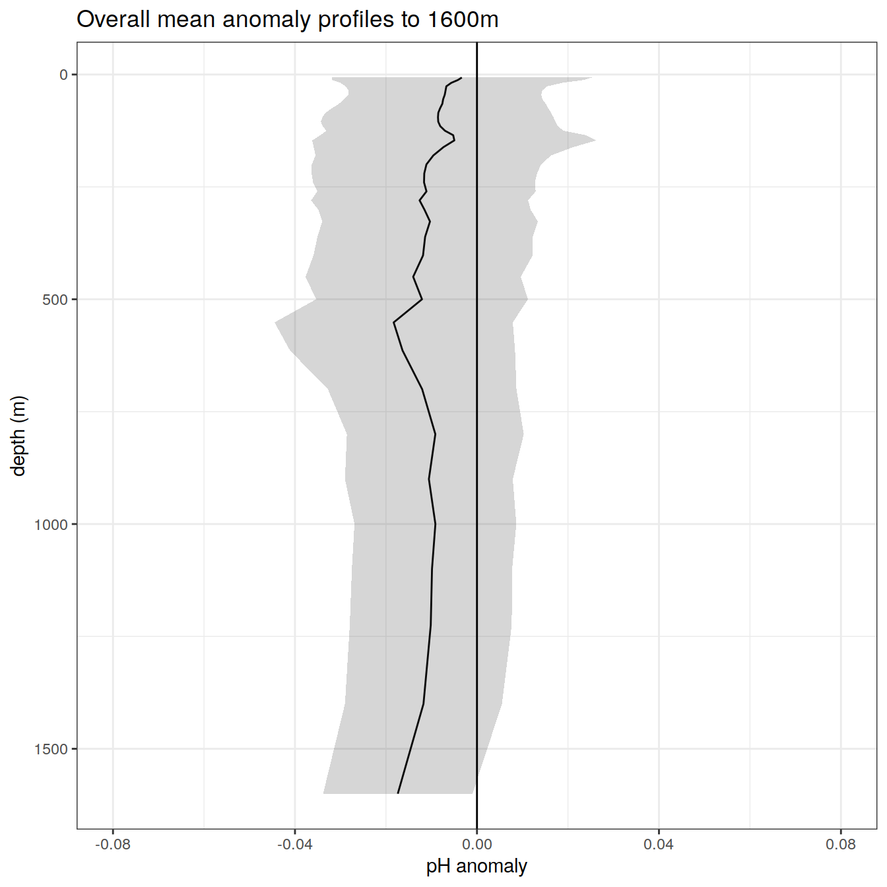
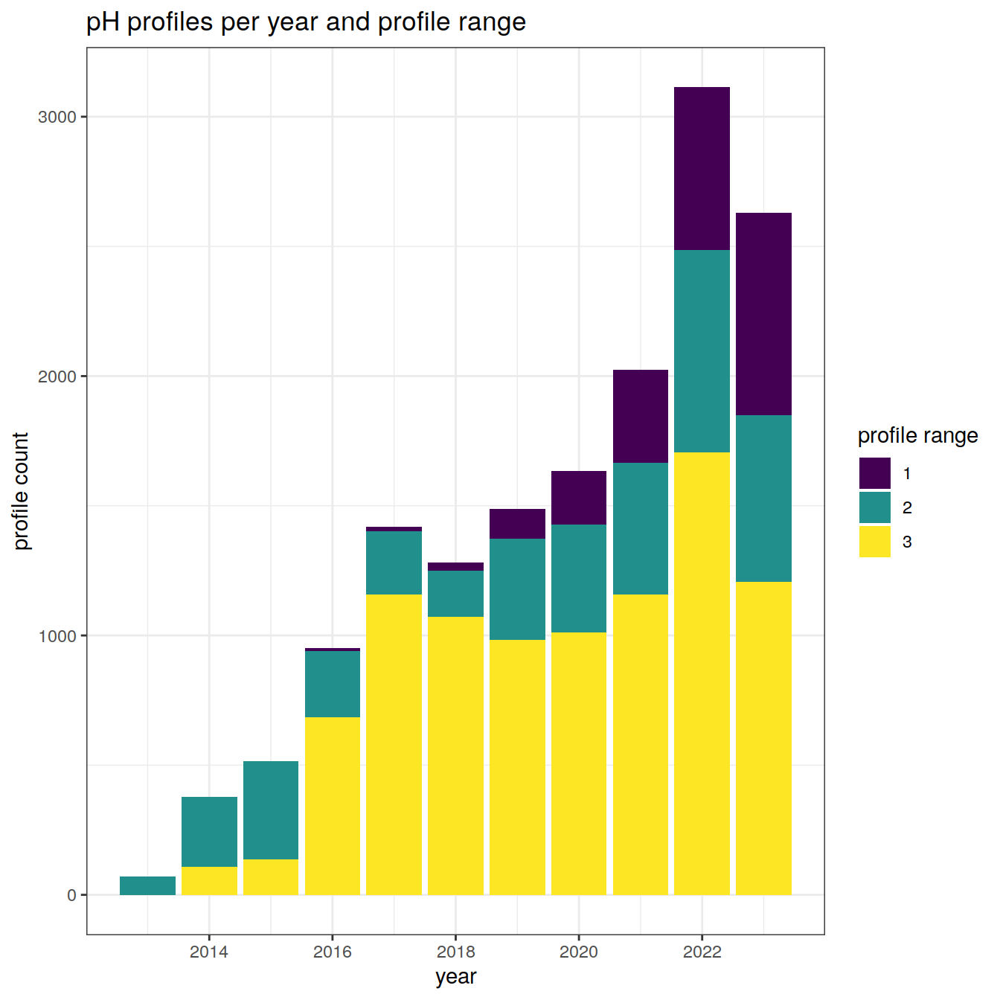

Last updated: 2024-01-01
Checks: 7 0
Knit directory:
bgc_argo_r_argodata/analysis/
This reproducible R Markdown analysis was created with workflowr (version 1.7.0). The Checks tab describes the reproducibility checks that were applied when the results were created. The Past versions tab lists the development history.
Great! Since the R Markdown file has been committed to the Git repository, you know the exact version of the code that produced these results.
Great job! The global environment was empty. Objects defined in the global environment can affect the analysis in your R Markdown file in unknown ways. For reproduciblity it’s best to always run the code in an empty environment.
The command set.seed(20211008) was run prior to running
the code in the R Markdown file. Setting a seed ensures that any results
that rely on randomness, e.g. subsampling or permutations, are
reproducible.
Great job! Recording the operating system, R version, and package versions is critical for reproducibility.
Nice! There were no cached chunks for this analysis, so you can be confident that you successfully produced the results during this run.
Great job! Using relative paths to the files within your workflowr project makes it easier to run your code on other machines.
Great! You are using Git for version control. Tracking code development and connecting the code version to the results is critical for reproducibility.
The results in this page were generated with repository version da3be73. See the Past versions tab to see a history of the changes made to the R Markdown and HTML files.
Note that you need to be careful to ensure that all relevant files for
the analysis have been committed to Git prior to generating the results
(you can use wflow_publish or
wflow_git_commit). workflowr only checks the R Markdown
file, but you know if there are other scripts or data files that it
depends on. Below is the status of the Git repository when the results
were generated:
Ignored files:
Ignored: .Rhistory
Ignored: .Rproj.user/
Ignored: output/
Unstaged changes:
Modified: code/start_background_job.R
Modified: code/start_background_job_partial.R
Note that any generated files, e.g. HTML, png, CSS, etc., are not included in this status report because it is ok for generated content to have uncommitted changes.
These are the previous versions of the repository in which changes were
made to the R Markdown (analysis/pH_align_climatology.Rmd)
and HTML (docs/pH_align_climatology.html) files. If you’ve
configured a remote Git repository (see ?wflow_git_remote),
click on the hyperlinks in the table below to view the files as they
were in that past version.
| File | Version | Author | Date | Message |
|---|---|---|---|---|
| html | 07d4eb8 | ds2n19 | 2023-12-20 | Build site. |
| html | fa6cf38 | ds2n19 | 2023-12-14 | Build site. |
| Rmd | 64fd104 | ds2n19 | 2023-12-14 | revised coverage analysis and SO focused cluster analysis. |
| html | f110b74 | ds2n19 | 2023-12-13 | Build site. |
| Rmd | acb6523 | ds2n19 | 2023-12-12 | Added documentation added to tasks section at start of each script. |
| html | e60ebd2 | ds2n19 | 2023-12-07 | Build site. |
| Rmd | 59f5cc4 | ds2n19 | 2023-11-23 | Moved spatiotemporal analysis to use aligned profiles. |
| html | 80c16c2 | ds2n19 | 2023-11-15 | Build site. |
| Rmd | 3eba518 | ds2n19 | 2023-11-15 | Introduction of vertical alignment and cluster analysis to github website. |
This markdown file reads previously created pH climatology file and uses that as the definition of the depth levels that the Argo pH data should be aligned to. Previously created BGC data (bgc_data.rds) and metadata (bgc_metadata.rds) are loaded from the BGC preprocessed folder.
Base data qc flags are checked to ensure that the float position, pressure measurements and pH measurements are good. Pressure is used to derive the depth of each measurement. The pH profile is checked to ensure that significant gaps (specified by the opt_gap_limit, opt_gap_min_depth and opt_gap_max_depth) do not exist. Profiles are assigned a profile_range field that identifies the depth 1 = 614 m, 2 = 1225 m and 3 = 1600 m.
The float pH profiles are then aligned using the spline function to match the depth levels of the climatology resulting in data frame bgc_data_pH_interpolated_clean. Processing also ensures that a [H]+ fields are created in the climatology and vertically aligned profiles. An anomaly file is then created from the vertically aligned profiles and climatology.
ucsd_ph_clim.rds - created by load_argo_clim_pH_ucsd
bgc_data, bgc_metadata - created by load_argo
ph_bgc_va.rds – vertically aligned ph profiles.
ph_clim_va.rds – climatology ph profiles.
ph_anomaly_va.rds – anomaly ph profiles.
location of pre-prepared data
Define options that are used to determine profiles that we will us in the ongoing analysis
# Options
# opt_profile_depth_range
# The profile must have at least one pH reading at a depth <= opt_profile_depth_range[1, ]
# The profile must have at least one pH reading at a depth >= opt_profile_depth_range[2, ].
# In addition if the profile depth does not exceed the min(opt_profile_depth_range[2, ]) (i.e. 600) it will be removed.
profile_range <- c(1, 2, 3)
min_depth <- c(10, 10, 10)
max_depth <- c(614, 1225, 1600)
opt_profile_depth_range <- data.frame(profile_range, min_depth, max_depth)
# opt_gap...
# The profile should not have a gap greater that opt_gap_limit within the range defined by opt_gap_min_depth and opt_gap_max_depth
opt_gap_limit <- c(28, 55, 110)
opt_gap_min_depth <- c(0, 400, 1000)
opt_gap_max_depth <- c(400, 1000, 1600)
# opt_measure
# opt_measure = 1 analysis is done using pH
# opt_measure = 2 analysis is done using h_plus
# opt_measure_label, opt_xlim and opt_xbreaks are associated formatting
opt_measure <- 1
if (opt_measure == 1){
opt_measure_label <- "pH anomaly"
opt_xlim <- c(-0.08, 0.08)
opt_xbreaks <- c(-0.08, -0.04, 0, 0.04, 0.08)
} else {
opt_measure_label <- expression("[H]"^"+" ~ "anomaly")
opt_xlim <- c(-2e-9, 2e-9)
opt_xbreaks <- c(-2e-9, -1e-9, 0, 1e-9, 2e-9)
}
# opt_n_prof_sel
# The selection criteria that is used against n_prof, here set to 1
# Description of n_prof usage is provided at https://argo.ucsd.edu/data/data-faq/version-3-profile-files/ the next two lines are from that page.
# The main Argo CTD profile is stored in N_PROF=1. All other parameters (including biogeochemical parameters) that are measured
# with the same vertical sampling scheme and at the same location and time as the main Argo CTD profile are also stored in N_PROF=1.
opt_n_prof_sel <- 1
# opt_exclude_shallower
# This option will exclude depths from the climatology and subsequent vertically aligned data that are shallower than opt_exclude_shallower.
# e.g. set to 2.2 to ensure that the top depth of 2.1 m is excluded
# Set to 0.0 to ensure no depths are excluded.
opt_exclude_shallower <- 2.2
# opt_shallow_check_perc and opt_shallow_check_diff
# A check is made to ensure that the pH of the shallowest depth in the profile after vertical alignment is within a limit of the
# pH of the shallowest depth in the profile before vertical alignment
# a opt_shallow_check values of 0.01 results in those with greater than a 1% difference will be reported. Set to 0.0 if percentage check is not required.
# a opt_shallow_report_diff that is non-zero and positive will check that absolute difference. Set to 0.0 if absolute difference check is not required.
opt_shallow_check_perc <- 0.01
opt_shallow_report_perc <- 'profile where shallow check exceeds percentage criteria: '
opt_shallow_check_diff <- 0.025
opt_shallow_report_diff <- 'profile where shallow check exceeds absolute difference criteria: 'read pH climatology, values are provided at set depths
# climatology values (clim_ph) available for lat, lon, month and pressure
ucsd_clim <- read_rds(file = paste0(path_argo_preprocessed, '/ucsd_ph_clim.rds'))
# Select fields of interest
ucsd_clim <- ucsd_clim %>%
mutate(
clim_h_plus = 10^-clim_pH
)
#What is the max depth we are interested in
opt_profile_max_depth <- max(opt_profile_depth_range$max_depth)
# existing depth levels that we will align to
target_depth_levels <- ucsd_clim %>%
filter(depth <= opt_profile_max_depth) %>%
rename(target_depth = depth) %>%
distinct(target_depth)
# Exclude 2.1m depth from the climatology and target_depth_levels
target_depth_levels <- target_depth_levels %>% filter(target_depth > opt_exclude_shallower)
ucsd_clim <- ucsd_clim %>% filter(depth > opt_exclude_shallower)read pH profile and carry out basic checks, good data.
# base data and associated metadata
bgc_data <- read_rds(file = paste0(path_argo_preprocessed, '/bgc_data.rds'))
bgc_metadata <- read_rds(file = paste0(path_argo_preprocessed, '/bgc_metadata.rds'))
# Select relevant field from metadata ready to join to bgc_data
bgc_metadata_select <- bgc_metadata %>%
filter(position_qc == 1) %>%
select(file_id,
date,
lat,
lon) %>%
mutate(year = year(date),
month = month(date),
.after = date)
# create random subset of 2000 out of 163,172 profiles for review purpose only
# bgc_data <-
# left_join(bgc_metadata_select %>%
# distinct(file_id) %>%
# slice_sample(n = 2000),
# bgc_data)
# we drive alignment from pressure and pH data
# conditions
# n_prof == 1
# pres_adjusted_qc %in% c(1, 8) - pressure data marked as good
# ph_in_situ_total_adjusted_qc %in% c(1, 8) - pH data marked as good
# !is.na(pres_adjusted) - pressure value must be present
# !is.na(ph_in_situ_total_adjusted) - pH value must be present
bgc_data_pH <- bgc_data %>%
filter(
pres_adjusted_qc %in% c(1, 8) &
ph_in_situ_total_adjusted_qc %in% c(1, 8) &
n_prof == opt_n_prof_sel &
!is.na(pres_adjusted) &
!is.na(ph_in_situ_total_adjusted)
) %>%
select(file_id,
pres_adjusted,
ph_in_situ_total_adjusted)
# join with metadata information and calculate depth field
bgc_data_pH <- inner_join(bgc_metadata_select %>% select(file_id, lat),
bgc_data_pH) %>%
mutate(depth = gsw_z_from_p(pres_adjusted, latitude = lat) * -1.0,
.before = pres_adjusted) %>%
select(-c(lat, pres_adjusted))
# filter(!is.na(file_id))
# ensure we have a depth, and ph_in_situ_total_adjusted for all rows in bgc_data_pH
bgc_data_pH <- bgc_data_pH %>%
filter(!is.na(depth) & !is.na(ph_in_situ_total_adjusted))
# clean up working tables
rm(bgc_data, bgc_metadata)
gc() used (Mb) gc trigger (Mb) max used (Mb)
Ncells 1313124 70.2 2477858 132.4 2477858 132.4
Vcells 50194414 383.0 3063698511 23374.2 3781992122 28854.4Apply the rules that are determined by options set in set_options. Profile must cover a set range and not contain gaps.
# Determine profile min and max depths
bgc_profile_limits <- bgc_data_pH %>%
group_by(file_id) %>%
summarise(
min_depth = min(depth),
max_depth = max(depth),
) %>%
ungroup()
# --------------------------------------------------------------------------------------
# What is the distribution of min depths
out <- bgc_profile_limits %>%
filter(min_depth > 0 & min_depth < 10) %>%
mutate(min_bin = cut(min_depth, breaks = c(seq(0, 10, by = 0.5))))
out <- out %>%
group_by(min_bin) %>%
summarise(count_profiles = n())
out %>%
ggplot(aes(min_bin)) +
geom_bar(aes(weight = count_profiles)) +
scale_fill_viridis_d() +
labs(title = "pH profiles minimum depth",
x = "min depth (m)",
y = "profile count")
| Version | Author | Date |
|---|---|---|
| 80c16c2 | ds2n19 | 2023-11-15 |
# --------------------------------------------------------------------------------------
# The profile must cover at least the weakest range criteria
force_min <- min(opt_profile_depth_range$min_depth)
force_max <- min(opt_profile_depth_range$max_depth)
# Apply profile min and max restrictions
bgc_apply_limits <- bgc_profile_limits %>%
filter(
min_depth <= force_min &
max_depth >= force_max
)
# Ensure working data set only contains profiles that have conformed to the range test
bgc_data_pH <- right_join(bgc_data_pH,
bgc_apply_limits %>% select(file_id))
# filter(!is.na(min_depth))
# Add profile type field and set all to 1.
# All profile that meet the minimum requirements are profile_range = 1
bgc_data_pH <- bgc_data_pH %>%
mutate(profile_range = 1)
for (i in 2:nrow(opt_profile_depth_range)) {
#i = 3
range_min <- opt_profile_depth_range[i, 'min_depth']
range_max <- opt_profile_depth_range[i, 'max_depth']
# Apply profile min and max restrictions
bgc_apply_limits <- bgc_profile_limits %>%
filter(min_depth <= range_min &
max_depth >= range_max) %>%
select(file_id) %>%
mutate (profile_range = i)
# Update profile range to i for these profiles
# bgc_data_temp <- full_join(bgc_data_temp, bgc_apply_limits) %>%
# filter(!is.na(min_depth))
bgc_data_pH <-
bgc_data_pH %>% rows_update(bgc_apply_limits, by = "file_id")
}
# Find gaps that occur with the core profile range
profile_gaps <- full_join(bgc_data_pH,
opt_profile_depth_range) %>%
filter(depth >= min_depth &
depth <= max_depth) %>%
select(file_id,
depth) %>%
arrange(file_id, depth) %>%
group_by(file_id) %>%
mutate(gap = depth - lag(depth, default = 0)) %>%
ungroup()
# Ensure we do not have gaps in the profile that invalidate it
for (i_gap in opt_gap_limit) {
# The limits to be applied in that pass of for loop
# i_gap <- opt_gap_limit[3]
i_gap_min = opt_gap_min_depth[which(opt_gap_limit == i_gap)]
i_gap_max = opt_gap_max_depth[which(opt_gap_limit == i_gap)]
# Which gaps are greater than i_gap
profile_gaps_remove <- profile_gaps %>%
filter(gap > i_gap) %>%
filter(depth >= i_gap_min & depth <= i_gap_max) %>%
distinct(file_id) %>%
pull()
# Remonve gap-containing profiles from working data set
bgc_data_pH <- bgc_data_pH %>%
filter(!file_id %in% profile_gaps_remove)
}
# clean up working tables
rm(bgc_profile_limits, profile_gaps, profile_gaps_remove, bgc_apply_limits)
gc() used (Mb) gc trigger (Mb) max used (Mb)
Ncells 1470648 78.6 2477858 132.4 2477858 132.4
Vcells 52584722 401.2 2450958809 18699.4 3781992122 28854.4# For each profile what is the pH at the shallowest depth of the profile, this is used in a comparison after vertical alignment
shallow_pH_raw <- right_join(
bgc_data_pH,
bgc_data_pH %>%
group_by(file_id) %>%
summarise(depth = min(depth)) %>%
ungroup()
) %>%
select (file_id, pH_shallow_raw = ph_in_situ_total_adjusted)
# Write file that are observations prior to vertical alignment
bgc_data_pH_full <- left_join(bgc_data_pH, bgc_metadata_select)
bgc_data_pH_full %>%
select(file_id, lat, lon, date, year, month, depth, ph_in_situ_total_adjusted) %>%
write_rds(file = paste0(path_argo_preprocessed, "/pH_bgc_observed.rds"))
# # also add file name and write CSV file for Joel
# bgc_fileID <- read_rds(file = paste0(path_argo_preprocessed, '/bgc_fileid.rds'))
# bgc_data_pH_full <- left_join(bgc_data_pH_full, bgc_fileID)
#
# bgc_data_pH_full %>%
# select(file_id, file, lat, lon, date, year, month, depth, ph_in_situ_total_adjusted) %>%
# write_csv(file = paste0(path_argo_preprocessed, "/pH_bgc_observed.csv"))
# rm(bgc_fileID)
rm(bgc_data_pH_full)
gc() used (Mb) gc trigger (Mb) max used (Mb)
Ncells 1471123 78.6 2477858 132.4 2477858 132.4
Vcells 52609026 401.4 1960767048 14959.5 3781992122 28854.4We have a set of pH profiles that match our criteria we now need to align that data set to match the depth that are in target_depth_levels, this will match the range of climatology values in ucsd_clim
# create unique combinations of file_id and profile ranges
profile_range_file_id <-
bgc_data_pH %>%
distinct(file_id, profile_range)
# select variable of interest and prepare target_depth field
bgc_data_pH_clean <- bgc_data_pH %>%
select(-profile_range) %>%
mutate(target_depth = depth, .after = depth)
rm(bgc_data_pH)
gc() used (Mb) gc trigger (Mb) max used (Mb)
Ncells 1460247 78.0 2477858 132.4 2477858 132.4
Vcells 49991309 381.5 1568613639 11967.6 3781992122 28854.4# create all possible combinations of location, month and depth levels for interpolation
target_depth_grid <-
expand_grid(
target_depth_levels,
profile_range_file_id
)
# Constrain target_depth_grid to profile depth range
target_depth_grid <-
left_join(target_depth_grid, opt_profile_depth_range) %>%
filter(target_depth <= max_depth)
target_depth_grid <- target_depth_grid %>%
select(target_depth,
file_id)
# extend pH depth vectors with target depths
bgc_data_pH_extended <-
full_join(bgc_data_pH_clean, target_depth_grid) %>%
arrange(file_id, target_depth)
rm(bgc_data_pH_clean)
gc() used (Mb) gc trigger (Mb) max used (Mb)
Ncells 1462385 78.1 2477858 132.4 2477858 132.4
Vcells 55523171 423.7 1254890912 9574.1 3781992122 28854.4# predict spline interpolation on adjusted depth grid for pH location and month
bgc_data_pH_interpolated <-
bgc_data_pH_extended %>%
group_by(file_id) %>%
mutate(pH_spline = spline(target_depth, ph_in_situ_total_adjusted,
method = "natural",
xout = target_depth)$y) %>%
ungroup()
rm(bgc_data_pH_extended)
gc() used (Mb) gc trigger (Mb) max used (Mb)
Ncells 1464156 78.2 2477858 132.4 2477858 132.4
Vcells 58716062 448.0 1003912730 7659.3 3781992122 28854.4# subset interpolated values on target depth range
bgc_data_pH_interpolated_clean <-
inner_join(target_depth_levels, bgc_data_pH_interpolated)
rm(bgc_data_pH_interpolated)
gc() used (Mb) gc trigger (Mb) max used (Mb)
Ncells 1464200 78.2 2477858 132.4 2477858 132.4
Vcells 46999293 358.6 803130184 6127.4 3781992122 28854.4# select columns and rename to initial names
bgc_data_pH_interpolated_clean <-
bgc_data_pH_interpolated_clean %>%
select(file_id,
depth = target_depth,
pH = pH_spline)
# merge with profile range
bgc_data_pH_interpolated_clean <-
full_join(bgc_data_pH_interpolated_clean,
profile_range_file_id)
# merge with meta data
bgc_data_pH_interpolated_clean <-
left_join(bgc_data_pH_interpolated_clean,
bgc_metadata_select)
# Create H+ fields
bgc_data_pH_interpolated_clean <- bgc_data_pH_interpolated_clean %>%
mutate(h_plus = 10 ^ -pH)
# For each profile what is the pH at the shallowest depth of the profile after vertical alignment
shallow_pH_va <- right_join(
bgc_data_pH_interpolated_clean,
bgc_data_pH_interpolated_clean %>%
group_by(file_id) %>%
summarise(depth = min(depth)) %>%
ungroup()
) %>%
select (file_id, pH_shallow_va = pH)A check is made that the shallowest pH value after the vertical alignment is within a specified percentage of the shallowest pH value before the vertical alignment
# Combined dataframe with shallow value pre and post vertical alignment
shallow_ph_check <-
full_join(shallow_pH_raw, shallow_pH_va)
# Determine those profile that are outside of percentage criteria.
if (opt_shallow_check_perc > 0.0){
shallow_check_report <- shallow_ph_check %>%
filter (abs((pH_shallow_raw - pH_shallow_va) / pH_shallow_raw) > opt_shallow_check_perc)
# Write issues to console
if (nrow(shallow_check_report) > 0) {
print (opt_shallow_report_perc)
shallow_check_report %>% rmarkdown::paged_table()
}
}[1] "profile where shallow check exceeds percentage criteria: "# Determine those profile that are outside of absolute difference criteria.
if (opt_shallow_check_diff > 0.0){
shallow_check_report <- shallow_ph_check %>%
filter (abs(pH_shallow_raw - pH_shallow_va) > opt_shallow_check_diff)
# Write issues to console
if (nrow(shallow_check_report) > 0) {
print (opt_shallow_report_diff)
shallow_check_report %>% rmarkdown::paged_table()
}
}[1] "profile where shallow check exceeds absolute difference criteria: "# remove working files
rm(shallow_ph_check, shallow_pH_raw, shallow_pH_va, shallow_check_report)
gc() used (Mb) gc trigger (Mb) max used (Mb)
Ncells 1469318 78.5 2477858 132.4 2477858 132.4
Vcells 49911417 380.8 642504148 4902.0 3781992122 28854.4Create anomaly profiles as observed - climatology
# Create bgc_pH_anomaly
bgc_pH_anomaly <-
inner_join(bgc_data_pH_interpolated_clean, ucsd_clim)
# filter(!is.na(clim_pH) & lat <= -30)
# Calculate the anomaly pH
bgc_pH_anomaly <- bgc_pH_anomaly %>%
mutate(anomaly_pH = pH - clim_pH,
anomaly_h_plus = h_plus - clim_h_plus)
# -----------------------------------------------------------------------------
# Climatology check
# -----------------------------------------------------------------------------
# It is possible even though we have observational measures to full depth the climatology may not match all depth.
# These profiles will be removed from both temp_bgc_va and temp_anomaly_va
# Anomaly max depth
bgc_pH_anomaly_depth_check <- bgc_pH_anomaly %>%
group_by(file_id,
profile_range) %>%
summarise(min_pdepth = min(depth),
max_pdepth = max(depth)) %>%
ungroup()
# Add the required min depth and max depth
bgc_pH_anomaly_depth_check <- left_join(bgc_pH_anomaly_depth_check, opt_profile_depth_range)
# This profiles do not match the depth required by the profile_range
# min_depth_check <- min(target_depth_grid$target_depth)
# Please double check if the criterion should be
# each profile is checked against the min depth specified in min_depth
# max depth specified in max_depth.
remove_profiles <- bgc_pH_anomaly_depth_check %>%
filter((max_pdepth < max_depth) | (min_pdepth > min_depth)) %>%
distinct(file_id)
# remove from both bgc_data_pH_interpolated_clean and bgc_pH_anomaly
bgc_data_pH_interpolated_clean <-
anti_join(bgc_data_pH_interpolated_clean, remove_profiles)
bgc_pH_anomaly <- anti_join(bgc_pH_anomaly, remove_profiles)
# clean up working tables
#rm(bgc_pH_anomaly_depth_check, remove_profiles)Write the climatology that maps onto depth levels, interpolated pH profiles that map onto depth levels and resulting anomaly files.
# Write files
bgc_data_pH_interpolated_clean %>%
write_rds(file = paste0(path_argo_preprocessed, "/pH_bgc_va.rds"))
ucsd_clim %>%
write_rds(file = paste0(path_argo_preprocessed, "/pH_clim_va.rds"))
bgc_pH_anomaly %>%
write_rds(file = paste0(path_argo_preprocessed, "/pH_anomaly_va.rds"))
# Rename so that names match if just reading existing files
pH_bgc_va <- bgc_data_pH_interpolated_clean
pH_clim_va <- ucsd_clim
pH_anomaly_va <- bgc_pH_anomaly
rm(bgc_data_pH_interpolated_clean, ucsd_clim, bgc_pH_anomaly)
gc() used (Mb) gc trigger (Mb) max used (Mb)
Ncells 1470452 78.6 2477858 132.4 2477858 132.4
Vcells 54817509 418.3 514003319 3921.6 3781992122 28854.4Read files that were previously created ready for analysis
# read files
pH_bgc_va <- read_rds(file = paste0(path_argo_preprocessed, "/pH_bgc_va.rds"))
pH_clim_va <- read_rds(file = paste0(path_argo_preprocessed, "/pH_clim_va.rds"))
pH_anomaly_va <- read_rds(file = paste0(path_argo_preprocessed, "/pH_anomaly_va.rds"))max_depth_1 <- opt_profile_depth_range[1, "max_depth"]
max_depth_2 <- opt_profile_depth_range[2, "max_depth"]
max_depth_3 <- opt_profile_depth_range[3, "max_depth"]
# Profiles to 600m
if (opt_measure == 1){
anomaly_overall_mean_1 <- pH_anomaly_va %>%
filter(profile_range %in% c(1, 2, 3) & depth <= max_depth_1) %>%
group_by(depth) %>%
summarise(count_anomaly = n(),
anomaly_mean = mean(anomaly_pH, na.rm = TRUE),
anomaly_sd = sd(anomaly_pH, na.rm = TRUE))
anomaly_year_mean_1 <- pH_anomaly_va %>%
filter(profile_range %in% c(1, 2, 3) & depth <= max_depth_1) %>%
group_by(year, depth) %>%
summarise(count_anomaly = n(),
anomaly_mean = mean(anomaly_pH, na.rm = TRUE),
anomaly_sd = sd(anomaly_pH, na.rm = TRUE))
# Profiles to 1200m
anomaly_overall_mean_2 <- pH_anomaly_va %>%
filter(profile_range %in% c(2, 3) & depth <= max_depth_2) %>%
group_by(depth) %>%
summarise(count_anomaly = n(),
anomaly_mean = mean(anomaly_pH, na.rm = TRUE),
anomaly_sd = sd(anomaly_pH, na.rm = TRUE))
anomaly_year_mean_2 <- pH_anomaly_va %>%
filter(profile_range %in% c(2, 3) & depth <= max_depth_2) %>%
group_by(year, depth) %>%
summarise(count_anomaly = n(),
anomaly_mean = mean(anomaly_pH, na.rm = TRUE),
anomaly_sd = sd(anomaly_pH, na.rm = TRUE))
# Profiles to 1500m
anomaly_overall_mean_3 <- pH_anomaly_va %>%
filter(profile_range %in% c(3) & depth <= max_depth_3) %>%
group_by(depth) %>%
summarise(count_anomaly = n(),
anomaly_mean = mean(anomaly_pH, na.rm = TRUE),
anomaly_sd = sd(anomaly_pH, na.rm = TRUE))
anomaly_year_mean_3 <- pH_anomaly_va %>%
filter(profile_range %in% c(3) & depth <= max_depth_3) %>%
group_by(year, depth) %>%
summarise(count_anomaly = n(),
anomaly_mean = mean(anomaly_pH, na.rm = TRUE),
anomaly_sd = sd(anomaly_pH, na.rm = TRUE))
} else {
anomaly_overall_mean_1 <- pH_anomaly_va %>%
filter(profile_range %in% c(1, 2, 3) & depth <= max_depth_1) %>%
group_by(depth) %>%
summarise(count_anomaly = n(),
anomaly_mean = mean(anomaly_h_plus, na.rm = TRUE),
anomaly_sd = sd(anomaly_h_plus, na.rm = TRUE))
anomaly_year_mean_1 <- pH_anomaly_va %>%
filter(profile_range %in% c(1, 2, 3) & depth <= max_depth_1) %>%
group_by(year, depth) %>%
summarise(count_anomaly = n(),
anomaly_mean = mean(anomaly_h_plus, na.rm = TRUE),
anomaly_sd = sd(anomaly_h_plus, na.rm = TRUE))
# Profiles to 1200m
anomaly_overall_mean_2 <- pH_anomaly_va %>%
filter(profile_range %in% c(2, 3) & depth <= max_depth_2) %>%
group_by(depth) %>%
summarise(count_anomaly = n(),
anomaly_mean = mean(anomaly_h_plus, na.rm = TRUE),
anomaly_sd = sd(anomaly_h_plus, na.rm = TRUE))
anomaly_year_mean_2 <- pH_anomaly_va %>%
filter(profile_range %in% c(2, 3) & depth <= max_depth_2) %>%
group_by(year, depth) %>%
summarise(count_anomaly = n(),
anomaly_mean = mean(anomaly_h_plus, na.rm = TRUE),
anomaly_sd = sd(anomaly_h_plus, na.rm = TRUE))
# Profiles to 1500m
anomaly_overall_mean_3 <- pH_anomaly_va %>%
filter(profile_range %in% c(3) & depth <= max_depth_3) %>%
group_by(depth) %>%
summarise(count_anomaly = n(),
anomaly_mean = mean(anomaly_h_plus, na.rm = TRUE),
anomaly_sd = sd(anomaly_h_plus, na.rm = TRUE))
anomaly_year_mean_3 <- pH_anomaly_va %>%
filter(profile_range %in% c(3) & depth <= max_depth_3) %>%
group_by(year, depth) %>%
summarise(count_anomaly = n(),
anomaly_mean = mean(anomaly_h_plus, na.rm = TRUE),
anomaly_sd = sd(anomaly_h_plus, na.rm = TRUE)) %>%
ungroup()
}
# year_mean_3 <- anomaly_year_mean_3 %>%
# group_by(year_num = year) %>%
# summarise(year_mean = mean(anomaly_mean, na.rm = TRUE)) %>%
# ungroup()
#
# anomaly_year_mean_3 <- full_join(anomaly_year_mean_3, year_mean_3)
# All years
anomaly_overall_mean_1 %>%
ggplot() +
geom_path(aes(x = anomaly_mean,
y = depth)) +
geom_ribbon(aes(
xmax = anomaly_mean + anomaly_sd,
xmin = anomaly_mean - anomaly_sd,
y = depth
),
alpha = 0.2) +
geom_vline(xintercept = 0) +
scale_y_reverse() +
coord_cartesian(xlim = opt_xlim) +
scale_x_continuous(breaks = opt_xbreaks) +
labs(
title = paste0('Overall mean anomaly profiles to ', max_depth_1, 'm'),
x = opt_measure_label,
y = 'depth (m)'
)
| Version | Author | Date |
|---|---|---|
| 80c16c2 | ds2n19 | 2023-11-15 |
anomaly_overall_mean_2 %>%
ggplot() +
geom_path(aes(x = anomaly_mean,
y = depth)) +
geom_ribbon(aes(
xmax = anomaly_mean + anomaly_sd,
xmin = anomaly_mean - anomaly_sd,
y = depth
),
alpha = 0.2) +
geom_vline(xintercept = 0) +
scale_y_reverse() +
# scale_color_manual(values = HNL_colors)+
# scale_fill_manual(values = HNL_colors)+
coord_cartesian(xlim = opt_xlim) +
scale_x_continuous(breaks = opt_xbreaks) +
labs(
title = paste0('Overall mean anomaly profiles to ', max_depth_2, 'm'),
x = opt_measure_label,
y = 'depth (m)'
)
| Version | Author | Date |
|---|---|---|
| 80c16c2 | ds2n19 | 2023-11-15 |
anomaly_overall_mean_3 %>%
ggplot() +
geom_path(aes(x = anomaly_mean,
y = depth)) +
geom_ribbon(aes(
xmax = anomaly_mean + anomaly_sd,
xmin = anomaly_mean - anomaly_sd,
y = depth
),
alpha = 0.2) +
geom_vline(xintercept = 0) +
scale_y_reverse() +
# scale_color_manual(values = HNL_colors)+
# scale_fill_manual(values = HNL_colors)+
coord_cartesian(xlim = opt_xlim) +
scale_x_continuous(breaks = opt_xbreaks) +
labs(
title = paste0('Overall mean anomaly profiles to ', max_depth_3, 'm'),
x = opt_measure_label,
y = 'depth (m)'
)
| Version | Author | Date |
|---|---|---|
| 80c16c2 | ds2n19 | 2023-11-15 |
# by years
anomaly_year_mean_1 %>%
ggplot() +
geom_path(aes(x = anomaly_mean,
y = depth)) +
geom_ribbon(aes(
xmax = anomaly_mean + anomaly_sd,
xmin = anomaly_mean - anomaly_sd,
y = depth
),
alpha = 0.2) +
geom_vline(xintercept = 0) +
scale_y_reverse() +
# scale_color_manual(values = HNL_colors)+
# scale_fill_manual(values = HNL_colors)+
facet_wrap( ~ year) +
coord_cartesian(xlim = opt_xlim) +
scale_x_continuous(breaks = opt_xbreaks) +
labs(
title = paste0('Yearly mean anomaly profiles to ', max_depth_1, 'm'),
x = opt_measure_label,
y = 'depth (m)'
)
| Version | Author | Date |
|---|---|---|
| 80c16c2 | ds2n19 | 2023-11-15 |
anomaly_year_mean_2 %>%
ggplot() +
geom_path(aes(x = anomaly_mean,
y = depth)) +
geom_ribbon(aes(
xmax = anomaly_mean + anomaly_sd,
xmin = anomaly_mean - anomaly_sd,
y = depth
),
alpha = 0.2) +
geom_vline(xintercept = 0) +
scale_y_reverse() +
# scale_color_manual(values = HNL_colors)+
# scale_fill_manual(values = HNL_colors)+
facet_wrap( ~ year) +
coord_cartesian(xlim = opt_xlim) +
scale_x_continuous(breaks = opt_xbreaks) +
labs(
title = paste0('Yearly mean anomaly profiles to ', max_depth_2, 'm'),
x = opt_measure_label,
y = 'depth (m)'
)
| Version | Author | Date |
|---|---|---|
| 80c16c2 | ds2n19 | 2023-11-15 |
#min_year = min(year_mean_3$year_num)
anomaly_year_mean_3 %>%
ggplot() +
geom_path(aes(x = anomaly_mean,
y = depth)) +
geom_ribbon(aes(
xmax = anomaly_mean + anomaly_sd,
xmin = anomaly_mean - anomaly_sd,
y = depth
),
alpha = 0.2) +
#geom_vline(xintercept = year_mean_3$year_mean[year[1]-2013])+
geom_vline(xintercept = 0) +
scale_y_reverse() +
# scale_color_manual(values = HNL_colors)+
# scale_fill_manual(values = HNL_colors)+
facet_wrap( ~ year) +
coord_cartesian(xlim = opt_xlim) +
scale_x_continuous(breaks = opt_xbreaks) +
labs(
title = paste0('Yearly mean anomaly profiles to ', max_depth_3, 'm'),
x = opt_measure_label,
y = 'depth (m)'
)
| Version | Author | Date |
|---|---|---|
| 80c16c2 | ds2n19 | 2023-11-15 |
#rm(anomaly_overall_mean)Details of the number of profiles and to which depths over the analysis period
pH_histogram <- pH_bgc_va %>%
group_by(year, profile_range = as.character(profile_range)) %>%
summarise(num_profiles = n_distinct(file_id)) %>%
ungroup()
pH_histogram %>%
ggplot() +
geom_bar(
aes(
x = year,
y = num_profiles,
fill = profile_range,
group = profile_range
),
position = "stack",
stat = "identity"
) +
scale_fill_viridis_d() +
labs(title = "pH profiles per year and profile range",
x = "year",
y = "profile count",
fill = "profile range")
| Version | Author | Date |
|---|---|---|
| 80c16c2 | ds2n19 | 2023-11-15 |
sessionInfo()R version 4.2.2 (2022-10-31)
Platform: x86_64-pc-linux-gnu (64-bit)
Running under: openSUSE Leap 15.5
Matrix products: default
BLAS: /usr/local/R-4.2.2/lib64/R/lib/libRblas.so
LAPACK: /usr/local/R-4.2.2/lib64/R/lib/libRlapack.so
locale:
[1] LC_CTYPE=en_US.UTF-8 LC_NUMERIC=C
[3] LC_TIME=en_US.UTF-8 LC_COLLATE=en_US.UTF-8
[5] LC_MONETARY=en_US.UTF-8 LC_MESSAGES=en_US.UTF-8
[7] LC_PAPER=en_US.UTF-8 LC_NAME=C
[9] LC_ADDRESS=C LC_TELEPHONE=C
[11] LC_MEASUREMENT=en_US.UTF-8 LC_IDENTIFICATION=C
attached base packages:
[1] stats graphics grDevices utils datasets methods base
other attached packages:
[1] gsw_1.1-1 gridExtra_2.3 lubridate_1.9.0 timechange_0.1.1
[5] argodata_0.1.0 forcats_0.5.2 stringr_1.5.0 dplyr_1.1.3
[9] purrr_1.0.2 readr_2.1.3 tidyr_1.3.0 tibble_3.2.1
[13] ggplot2_3.4.4 tidyverse_1.3.2
loaded via a namespace (and not attached):
[1] Rcpp_1.0.10 assertthat_0.2.1 rprojroot_2.0.3
[4] digest_0.6.30 utf8_1.2.2 R6_2.5.1
[7] cellranger_1.1.0 backports_1.4.1 reprex_2.0.2
[10] evaluate_0.18 highr_0.9 httr_1.4.4
[13] pillar_1.9.0 rlang_1.1.1 googlesheets4_1.0.1
[16] readxl_1.4.1 rstudioapi_0.15.0 whisker_0.4
[19] jquerylib_0.1.4 rmarkdown_2.18 labeling_0.4.2
[22] googledrive_2.0.0 munsell_0.5.0 broom_1.0.5
[25] compiler_4.2.2 httpuv_1.6.6 modelr_0.1.10
[28] xfun_0.35 pkgconfig_2.0.3 htmltools_0.5.3
[31] tidyselect_1.2.0 workflowr_1.7.0 viridisLite_0.4.1
[34] fansi_1.0.3 crayon_1.5.2 withr_2.5.0
[37] tzdb_0.3.0 dbplyr_2.2.1 later_1.3.0
[40] grid_4.2.2 jsonlite_1.8.3 gtable_0.3.1
[43] lifecycle_1.0.3 DBI_1.1.3 git2r_0.30.1
[46] magrittr_2.0.3 scales_1.2.1 cli_3.6.1
[49] stringi_1.7.8 cachem_1.0.6 farver_2.1.1
[52] fs_1.5.2 promises_1.2.0.1 xml2_1.3.3
[55] bslib_0.4.1 ellipsis_0.3.2 generics_0.1.3
[58] vctrs_0.6.4 tools_4.2.2 glue_1.6.2
[61] RNetCDF_2.6-1 hms_1.1.2 fastmap_1.1.0
[64] yaml_2.3.6 colorspace_2.0-3 gargle_1.2.1
[67] rvest_1.0.3 knitr_1.41 haven_2.5.1
[70] sass_0.4.4